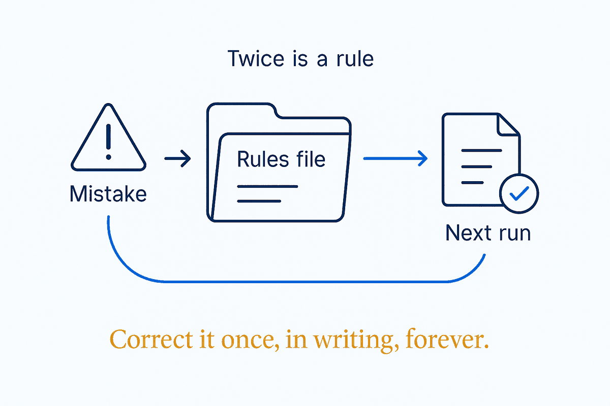

Same mistake twice = a new rule. Corrections you'd otherwise repeat forever get written into a file the AI reads every run.

The compounding brain has a concrete unit of compounding, and it's the correction. Every time you fix the AI's output the same way twice, that fix is a rule waiting to be written — into a mistakes file, a skill's "never do" section, a new line in the operating-system file. The trigger is mechanical, no judgement required: same mistake, second time, write it down where the system reads it.
The sharpest formulation comes from skill design: "never do" is the mistake you keep correcting. A good standing instruction isn't aspirational — it's congealed feedback, the residue of a real failure that already happened and must not happen again. That's also why rules written this way hold up: they're specific (they name an actual behaviour), they're testable (the mistake either recurs or it doesn't), and they carry their own justification (you remember the afternoon that produced them).
Without the reflex, you pay the same correction tax every session, forever — and the cost isn't just the minutes. A user who corrects the same thing fifty times stops trusting the system and starts pre-checking everything, at which point the assistant is overhead. With the reflex, the arithmetic flips: one session's frustration becomes every future session's default, and the system is measurably better on Tuesday than it was on Monday.
That's the real dividing line between setups that compound and setups that decay: not how much structure you started with, but whether corrections have somewhere to go. A mistakes file is the smallest possible version of a system that learns — one file, one rule per burn, read every run.